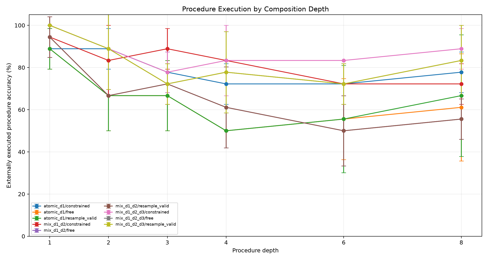
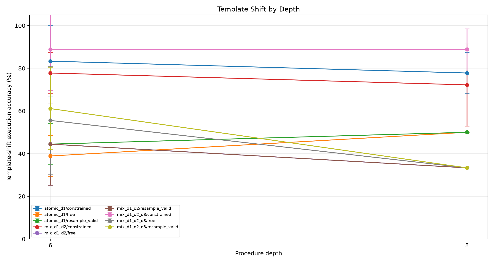
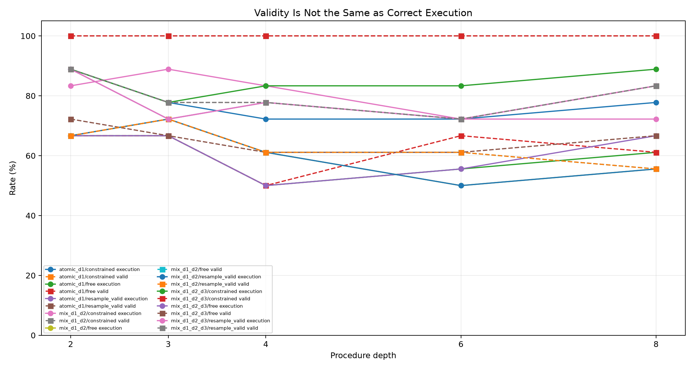
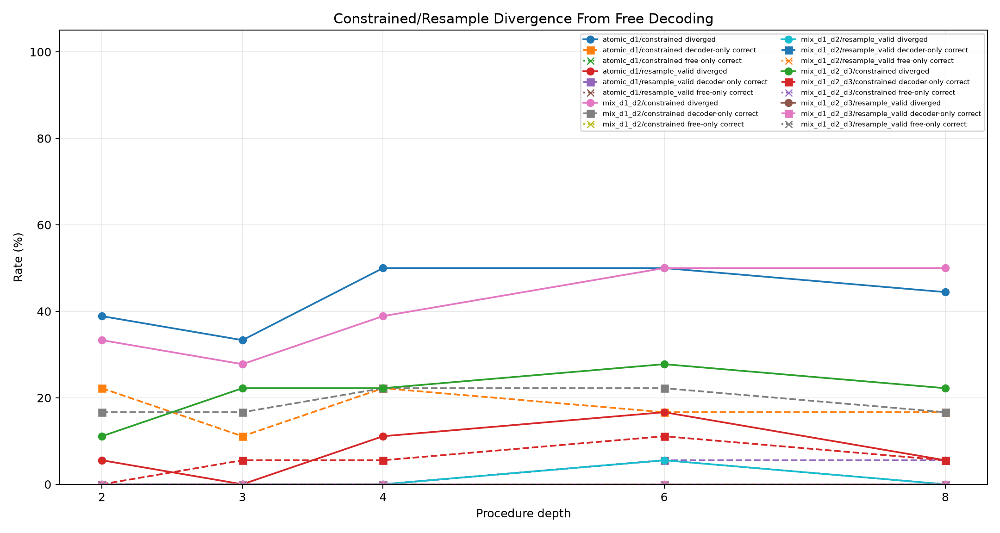
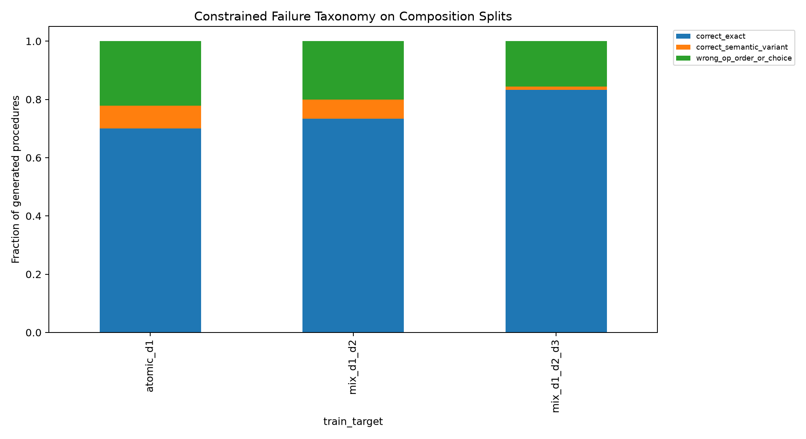
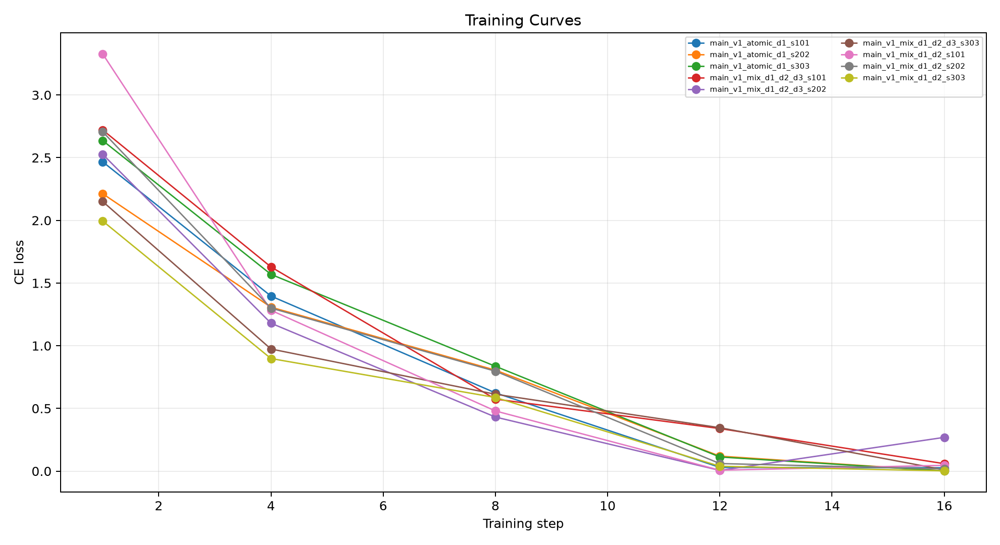

This standalone experiment tests whether shallow composed-procedure supervision makes a small language model a more reliable compiler into a deterministic stack ABI. The model never needs to execute the procedure itself; success is measured by executing the generated ABI program in an external interpreter.
Three QLoRA adapters are trained with the same ABI target and different curriculum depths:
Evaluation sweeps procedure depth 1, 2, 3, 4, 6, and 8. Depths above a curriculum's maximum are held-out composition tests. Separate wording-shift splits test whether the compiler is robust to surface phrasing. Each trained adapter is evaluated with free greedy decoding, finite-state constrained decoding, and a resample-to-valid baseline. A gold ABI sanity arm checks the interpreter.
The primary criterion is external execution accuracy on held-out deeper depths, especially depth 6 and depth 8. Valid-program rate alone is not a success metric; a useful curriculum must reduce valid-but-wrong composition errors, not only improve syntax.
| train_target | arm | split | depth | runs | n_total | exec_accuracy_mean | exec_accuracy_std | valid_exec_rate_mean | correct_given_valid_mean | divergence_rate_mean | constrained_only_rate_mean | free_only_rate_mean | mean_attempts_mean |
|---|---|---|---|---|---|---|---|---|---|---|---|---|---|
| atomic_d1 | program_stack_constrained | eval_comp_d4 | 4 | 3 | 18 | 72.2% | 9.6% | 100.0% | 72.2% | 50.0% | 22.2% | 0.0% | 1.00 |
| atomic_d1 | program_stack_free | eval_comp_d4 | 4 | 3 | 18 | 50.0% | 0.0% | 50.0% | 100.0% | n/a | n/a | n/a | 1.00 |
| atomic_d1 | program_stack_resample_valid | eval_comp_d4 | 4 | 3 | 18 | 50.0% | 0.0% | 61.1% | 83.3% | 11.1% | 0.0% | 0.0% | 1.44 |
| mix_d1_d2 | program_stack_constrained | eval_comp_d4 | 4 | 3 | 18 | 83.3% | 0.0% | 100.0% | 83.3% | 38.9% | 22.2% | 0.0% | 1.00 |
| mix_d1_d2 | program_stack_free | eval_comp_d4 | 4 | 3 | 18 | 61.1% | 19.2% | 61.1% | 100.0% | n/a | n/a | n/a | 1.00 |
| mix_d1_d2 | program_stack_resample_valid | eval_comp_d4 | 4 | 3 | 18 | 61.1% | 19.2% | 61.1% | 100.0% | 0.0% | 0.0% | 0.0% | 1.39 |
| mix_d1_d2_d3 | program_stack_constrained | eval_comp_d4 | 4 | 3 | 18 | 83.3% | 16.7% | 100.0% | 83.3% | 22.2% | 5.6% | 0.0% | 1.00 |
| mix_d1_d2_d3 | program_stack_free | eval_comp_d4 | 4 | 3 | 18 | 77.8% | 19.2% | 77.8% | 100.0% | n/a | n/a | n/a | 1.00 |
| mix_d1_d2_d3 | program_stack_resample_valid | eval_comp_d4 | 4 | 3 | 18 | 77.8% | 19.2% | 77.8% | 100.0% | 0.0% | 0.0% | 0.0% | 1.22 |
| oracle | gold_abi_constrained | eval_comp_d4 | 4 | 3 | 18 | 100.0% | 0.0% | 100.0% | 100.0% | n/a | n/a | n/a | 0.00 |
| atomic_d1 | program_stack_constrained | eval_comp_d6 | 6 | 3 | 18 | 72.2% | 9.6% | 100.0% | 72.2% | 50.0% | 16.7% | 0.0% | 1.00 |
| atomic_d1 | program_stack_free | eval_comp_d6 | 6 | 3 | 18 | 55.6% | 19.2% | 66.7% | 82.2% | n/a | n/a | n/a | 1.00 |
| atomic_d1 | program_stack_resample_valid | eval_comp_d6 | 6 | 3 | 18 | 55.6% | 25.5% | 61.1% | 88.9% | 16.7% | 5.6% | 5.6% | 1.39 |
| mix_d1_d2 | program_stack_constrained | eval_comp_d6 | 6 | 3 | 18 | 72.2% | 9.6% | 100.0% | 72.2% | 50.0% | 22.2% | 0.0% | 1.00 |
| mix_d1_d2 | program_stack_free | eval_comp_d6 | 6 | 3 | 18 | 50.0% | 16.7% | 61.1% | 83.3% | n/a | n/a | n/a | 1.00 |
| mix_d1_d2 | program_stack_resample_valid | eval_comp_d6 | 6 | 3 | 18 | 50.0% | 16.7% | 61.1% | 83.3% | 5.6% | 0.0% | 0.0% | 1.39 |
| mix_d1_d2_d3 | program_stack_constrained | eval_comp_d6 | 6 | 3 | 18 | 83.3% | 0.0% | 100.0% | 83.3% | 27.8% | 11.1% | 0.0% | 1.00 |
| mix_d1_d2_d3 | program_stack_free | eval_comp_d6 | 6 | 3 | 18 | 72.2% | 9.6% | 72.2% | 100.0% | n/a | n/a | n/a | 1.00 |
| mix_d1_d2_d3 | program_stack_resample_valid | eval_comp_d6 | 6 | 3 | 18 | 72.2% | 9.6% | 72.2% | 100.0% | 0.0% | 0.0% | 0.0% | 1.28 |
| oracle | gold_abi_constrained | eval_comp_d6 | 6 | 3 | 18 | 100.0% | 0.0% | 100.0% | 100.0% | n/a | n/a | n/a | 0.00 |
| atomic_d1 | program_stack_constrained | eval_comp_d8 | 8 | 3 | 18 | 77.8% | 9.6% | 100.0% | 77.8% | 44.4% | 16.7% | 0.0% | 1.00 |
| atomic_d1 | program_stack_free | eval_comp_d8 | 8 | 3 | 18 | 61.1% | 25.5% | 61.1% | 100.0% | n/a | n/a | n/a | 1.00 |
| atomic_d1 | program_stack_resample_valid | eval_comp_d8 | 8 | 3 | 18 | 66.7% | 28.9% | 66.7% | 100.0% | 5.6% | 5.6% | 0.0% | 1.39 |
| mix_d1_d2 | program_stack_constrained | eval_comp_d8 | 8 | 3 | 18 | 72.2% | 9.6% | 100.0% | 72.2% | 50.0% | 16.7% | 0.0% | 1.00 |
| mix_d1_d2 | program_stack_free | eval_comp_d8 | 8 | 3 | 18 | 55.6% | 9.6% | 55.6% | 100.0% | n/a | n/a | n/a | 1.00 |
| mix_d1_d2 | program_stack_resample_valid | eval_comp_d8 | 8 | 3 | 18 | 55.6% | 9.6% | 55.6% | 100.0% | 0.0% | 0.0% | 0.0% | 1.44 |
| mix_d1_d2_d3 | program_stack_constrained | eval_comp_d8 | 8 | 3 | 18 | 88.9% | 9.6% | 100.0% | 88.9% | 22.2% | 5.6% | 0.0% | 1.00 |
| mix_d1_d2_d3 | program_stack_free | eval_comp_d8 | 8 | 3 | 18 | 83.3% | 16.7% | 83.3% | 100.0% | n/a | n/a | n/a | 1.00 |
| mix_d1_d2_d3 | program_stack_resample_valid | eval_comp_d8 | 8 | 3 | 18 | 83.3% | 16.7% | 83.3% | 100.0% | 0.0% | 0.0% | 0.0% | 1.17 |
| oracle | gold_abi_constrained | eval_comp_d8 | 8 | 3 | 18 | 100.0% | 0.0% | 100.0% | 100.0% | n/a | n/a | n/a | 0.00 |
| atomic_d1 | program_stack_constrained | eval_template_d6 | 6 | 3 | 18 | 83.3% | 16.7% | 100.0% | 83.3% | 61.1% | 44.4% | 0.0% | 1.00 |
| atomic_d1 | program_stack_free | eval_template_d6 | 6 | 3 | 18 | 38.9% | 9.6% | 38.9% | 100.0% | n/a | n/a | n/a | 1.00 |
| atomic_d1 | program_stack_resample_valid | eval_template_d6 | 6 | 3 | 18 | 44.4% | 9.6% | 44.4% | 100.0% | 5.6% | 5.6% | 0.0% | 1.61 |
| mix_d1_d2 | program_stack_constrained | eval_template_d6 | 6 | 3 | 18 | 77.8% | 9.6% | 100.0% | 77.8% | 61.1% | 38.9% | 5.6% | 1.00 |
| mix_d1_d2 | program_stack_free | eval_template_d6 | 6 | 3 | 18 | 44.4% | 19.2% | 44.4% | 100.0% | n/a | n/a | n/a | 1.00 |
| mix_d1_d2 | program_stack_resample_valid | eval_template_d6 | 6 | 3 | 18 | 44.4% | 19.2% | 44.4% | 100.0% | 0.0% | 0.0% | 0.0% | 1.56 |
| mix_d1_d2_d3 | program_stack_constrained | eval_template_d6 | 6 | 3 | 18 | 88.9% | 19.2% | 100.0% | 88.9% | 44.4% | 33.3% | 0.0% | 1.00 |
| mix_d1_d2_d3 | program_stack_free | eval_template_d6 | 6 | 3 | 18 | 55.6% | 25.5% | 55.6% | 100.0% | n/a | n/a | n/a | 1.00 |
| mix_d1_d2_d3 | program_stack_resample_valid | eval_template_d6 | 6 | 3 | 18 | 61.1% | 19.2% | 61.1% | 100.0% | 5.6% | 5.6% | 0.0% | 1.44 |
| oracle | gold_abi_constrained | eval_template_d6 | 6 | 3 | 18 | 100.0% | 0.0% | 100.0% | 100.0% | n/a | n/a | n/a | 0.00 |
| atomic_d1 | program_stack_constrained | eval_template_d8 | 8 | 3 | 18 | 77.8% | 9.6% | 100.0% | 77.8% | 50.0% | 27.8% | 0.0% | 1.00 |
| atomic_d1 | program_stack_free | eval_template_d8 | 8 | 3 | 18 | 50.0% | 0.0% | 50.0% | 100.0% | n/a | n/a | n/a | 1.00 |
| atomic_d1 | program_stack_resample_valid | eval_template_d8 | 8 | 3 | 18 | 50.0% | 0.0% | 55.6% | 91.7% | 16.7% | 0.0% | 0.0% | 1.50 |
| mix_d1_d2 | program_stack_constrained | eval_template_d8 | 8 | 3 | 18 | 72.2% | 19.2% | 100.0% | 72.2% | 66.7% | 38.9% | 0.0% | 1.00 |
| mix_d1_d2 | program_stack_free | eval_template_d8 | 8 | 3 | 18 | 33.3% | 0.0% | 38.9% | 88.9% | n/a | n/a | n/a | 1.00 |
| mix_d1_d2 | program_stack_resample_valid | eval_template_d8 | 8 | 3 | 18 | 33.3% | 0.0% | 38.9% | 88.9% | 5.6% | 0.0% | 0.0% | 1.61 |
| mix_d1_d2_d3 | program_stack_constrained | eval_template_d8 | 8 | 3 | 18 | 88.9% | 9.6% | 100.0% | 88.9% | 66.7% | 55.6% | 0.0% | 1.00 |
| mix_d1_d2_d3 | program_stack_free | eval_template_d8 | 8 | 3 | 18 | 33.3% | 0.0% | 38.9% | 88.9% | n/a | n/a | n/a | 1.00 |
| mix_d1_d2_d3 | program_stack_resample_valid | eval_template_d8 | 8 | 3 | 18 | 33.3% | 0.0% | 44.4% | 77.8% | 11.1% | 0.0% | 0.0% | 1.61 |
| oracle | gold_abi_constrained | eval_template_d8 | 8 | 3 | 18 | 100.0% | 0.0% | 100.0% | 100.0% | n/a | n/a | n/a | 0.00 |






The experiment isolates a training-data question. If shallow composition examples improve depth-6 and depth-8 execution without merely increasing valid-rate, the remaining valid-but-wrong errors are partly a coverage problem: the compiler needed to see short composition traces to stabilize longer composition. If the depth curve does not improve, the remaining errors are a deeper sequencing or grounding limit.
At depth 6, the d1/d2/d3 curriculum changes execution by 11.1% and correct-given-valid by 11.1% relative to atomic-only training.
At depth 8, the same curriculum changes execution by 11.1% relative to atomic-only training.
For `atomic_d1` constrained decoding on depth-6/depth-8 composition splits, procedures break down as: correct_exact 61.1%, wrong_op_order_or_choice 25.0%, correct_semantic_variant 13.9%.
For `mix_d1_d2` constrained decoding on depth-6/depth-8 composition splits, procedures break down as: correct_exact 63.9%, wrong_op_order_or_choice 27.8%, correct_semantic_variant 8.3%.
For `mix_d1_d2_d3` constrained decoding on depth-6/depth-8 composition splits, procedures break down as: correct_exact 83.3%, wrong_op_order_or_choice 13.9%, correct_semantic_variant 2.8%.
This experiment tests compilation over a fixed known primitive library. It does not test invention of operations outside the ABI. The finite-state decoder is tied to the task schema and uses task-visible constants and type information. Depth-2 and depth-3 examples in the training curricula are supervised generated data, so gains should be read as curriculum effects rather than unsupervised discovery.